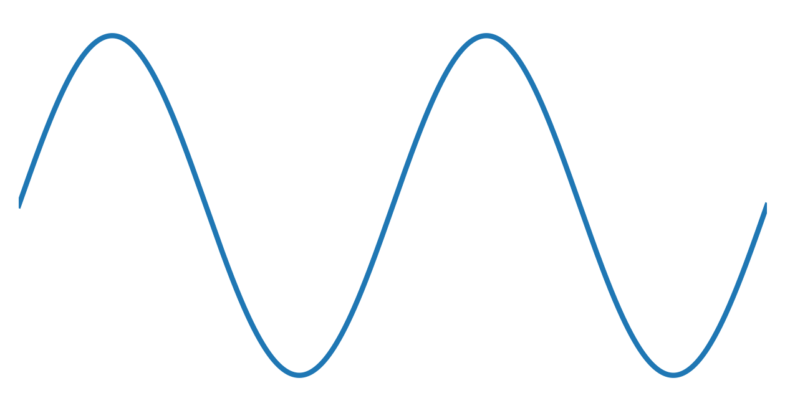
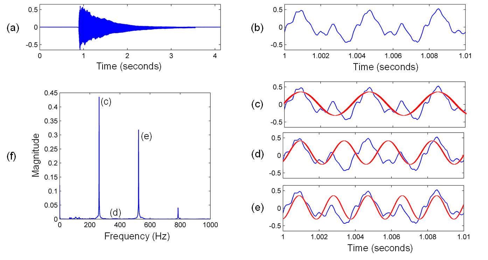
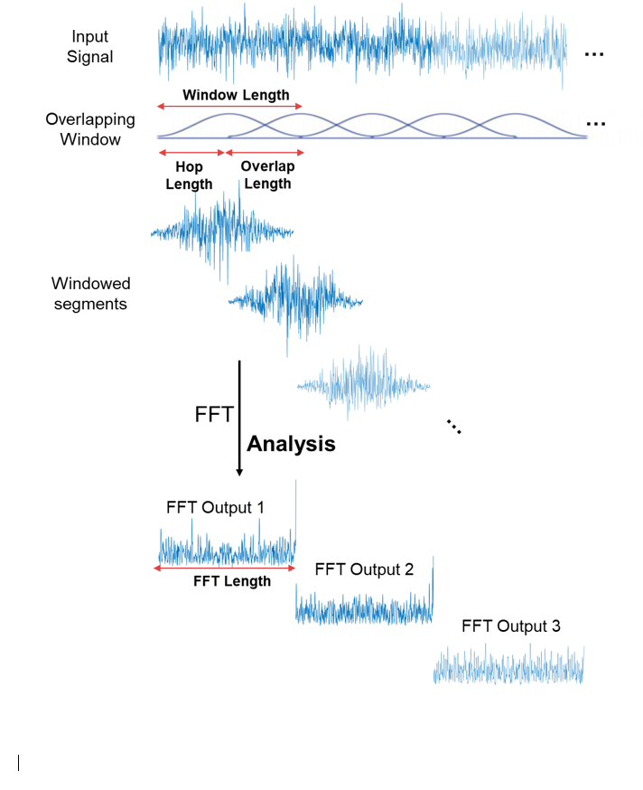
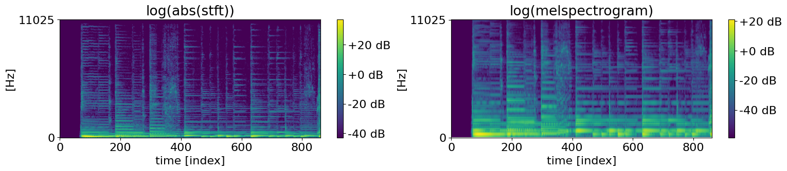

Turning Sound into Pixels (The Waveform & Spectrogram)
- 1. Sound as waveforms & spectrograms ← you are here
- 2. Recipes (MIDI) vs records (raw audio)
- 3. Audio tokens & neural codecs
- 4. Conditioning — steering generation
- 5. Real systems (AudioCraft, Suno…) & ethics
Goal: Build hands-on fluency with how sound becomes numbers on a computer — sampling, file size, Nyquist limits, and the STFT pipeline that turns a 1-D wave into a 2-D spectrogram image. By the end you can compute sample counts, predict spectrogram tensor shapes, and explain why generative models rarely ingest raw waves directly. No music theory required yet.
0. Primer — three ideas, zero music theory
Generative audio pipelines care about physics and data shapes, not whether you can read sheet music. Three everyday ideas map directly to the math below:
| Everyday idea | Audio term | What you measure | Gen-AI relevance |
|---|---|---|---|
| How loud | Amplitude | Height of the waveform (often −1.0 … +1.0 after normalization) | Stored in each sample; drives dynamics in diffusion / codec models |
| How high or low it sounds | Pitch / frequency | Cycles per second in Hertz (Hz) | Visible as horizontal bands on a spectrogram |
| What makes a piano ≠ a trumpet at the same pitch | Timbre | Mix of overtones + attack/decay envelope | Spread across many frequency bins; hard to see in one sample value |
Mini-glossary (Lesson 1 only)
- Waveform — amplitude vs time; one wiggly line (or one list of numbers).
- Sample rate fs — snapshots per second (CD audio: 44,100 Hz).
- Spectrogram — heat-map: time →, frequency ↑, brightness = energy at that pitch.
- STFT — Short-Time Fourier Transform; the standard algorithm that builds spectrograms.
Quiz 1 — Primer check
Q: A sound feels “boomier” (lower) than another. Which axis on a spectrogram moves — time, frequency, or brightness?
Show answer
Frequency (vertical). Lower pitch = lower Hz = energy appears closer to the bottom of the plot (convention varies, but “up = higher pitch” is standard). Brightness is loudness at that (time, freq) cell; time is left-to-right.
1. The waveform — pressure vs time
Sound is a rapid variation in air pressure around ambient pressure. A microphone converts that into voltage; we plot amplitude (related to pressure deviation) on the y-axis and time on the x-axis. That plot is the waveform.
- Amplitude — how far the line swings from the center (louder → bigger swing, until clipping).
- Frequency f — how many complete up-down cycles occur per second. Unit: Hz.
- Period T — seconds per cycle: T = 1 / f.
Worked comparison: 2 Hz vs 4 Hz
Imagine two pure sine tones recorded for exactly 1.0 second:
| Tone | Frequency | Period | What you see in 1 s of waveform |
|---|---|---|---|
| Low hum | 2 Hz | T = 1/2 = 0.50 s | 2 full cycles — wide, lazy waves |
| Higher hum | 4 Hz | T = 1/4 = 0.25 s | 4 full cycles — tighter zigzag (2× as many peaks in the same second) |


Quiz 2 — Frequency ↔ period
Q: A tuning fork vibrates at 440 Hz (concert A). What is its period in milliseconds?
Show answer
T = 1/440 ≈ 0.00227 s ≈ 2.27 ms per cycle. Higher Hz → shorter period → waveform repeats faster.
2. Analogue → digital — sampling, bit depth, file size
Air pressure is continuous. Computers store finite lists of numbers. Two steps:
- Sampling — measure amplitude every Δt = 1/fs seconds.
- Quantization — round each measurement to the nearest representable integer level (controlled by bit depth).
Core formulas
samples (stereo) = T × fs × 2 (one stream per channel)
bytes (PCM 16-bit) ≈ samples × 2 bytes/sample
levels (b-bit) = 2b (e.g. 16-bit → 65,536 levels)
Worked example — 3 seconds of CD-quality mono
Given: T = 3 s, fs = 44,100 Hz, 16-bit mono PCM.
- samples = 3 × 44,100 = 132,300 numbers
- bytes = 132,300 × 2 = 264,600 B ≈ 258.4 KB
- Each sample is one of 216 = 65,536 amplitude levels
Same clip stereo: 264,600 samples → 529,200 bytes ≈ 516.8 KB.
A 3-minute song (180 s) stereo: samples = 180 × 44,100 × 2 = 15,876,000; bytes ≈ 30.3 MB uncompressed.
Nyquist and aliasing
CD audio at 44,100 Hz can represent content up to ~22,050 Hz — above typical adult hearing (~20 kHz). If you sample too slowly, high tones alias: they masquerade as false low tones (like wagon wheels appearing to spin backward in film). Anti-aliasing filters remove energy above fs/2 before sampling.
Interactive — PCM size calculator
Duration T (seconds): Sample rate fs (Hz): Channels:
…
Quiz 3 — Sample arithmetic
Q: How many mono samples in 0.25 s at fs = 48,000 Hz? Roughly how many MB is that at 16-bit?
Show answer
samples = 0.25 × 48,000 = 12,000. bytes = 12,000 × 2 = 24,000 B ≈ 0.023 MB (23.4 KB).
Quiz 4 — Nyquist
Q: You record speech with fs = 16,000 Hz. What is the highest frequency you can faithfully represent? What happens to energy at 12 kHz if no low-pass filter is applied?
Show answer
Max faithful frequency ≈ fs/2 = 8 kHz. Energy at 12 kHz will alias — fold into lower bins (e.g. appear near 4 kHz) and corrupt the recording.
3. Why raw waveforms choke generative models
Text LLMs consume discrete tokens — often tens of thousands of context slots. Raw audio is a different beast:
| Representation | 3 s clip @ 44.1 kHz mono | ~3 min song mono |
|---|---|---|
| Raw PCM samples | 132,300 numbers | ~7.9 million numbers |
| GPT-scale context (~128k tokens) | A 3 s mono wave alone already rivals a full text context window — with no semantic compression | |
Problems for autoregressive / transformer models on raw waves:
- Length — one step per sample (or per tiny group) explodes sequence length.
- Opacity — sample #50,000 does not spell “middle C”; pitch is distributed across thousands of samples.
- Perceptual mismatch — ears integrate frequency content over ~10–30 ms windows; sample-by-sample modeling fights human hearing.
Industry pipelines therefore re-encode audio before the LM/diffusion core:
Quiz 5 — Scale intuition
Q: 10 s mono @ 44.1 kHz — order-of-magnitude sample count? Could a 128k-token LM treat each sample as one token and fit the whole clip in context?
Show answer
samples ≈ 10 × 44,100 = 441,000 — roughly 3.4× a 128k context. No, not without compression or patch grouping.
4. Fourier intuition → STFT step-by-step
A Fourier transform asks: “In this slice of signal, which pure frequencies are present, and how loud?” Plot magnitudes once → spectrum. Repeat on sliding windows → stack spectra side-by-side → spectrogram.


STFT mechanics (what librosa / torchaudio actually do)
- Choose window length N (e.g. 2048 samples) and hop H (e.g. 512).
- Frame k takes samples [k·H : k·H + N] multiplied by a window (Hann, etc.).
- FFT each frame → N/2 + 1 complex bins (positive frequencies for real signals).
- Store magnitude (often log-scaled) → one column of the spectrogram.
- Advance k by 1; repeat until the window passes the end of the clip.

nframes ≈ 1 + floor( (T·fs − N) / H )
nfreqs = N/2 + 1 | Δf = fs / N
Worked STFT example — numbers filled in
Clip: T = 3.0 s, fs = 44,100 Hz, N = 2048, H = 512.
- Total samples: 3 × 44,100 = 132,300
- Frame duration: 2048 / 44100 ≈ 46.4 ms (human hearing integrates ~20–40 ms — similar scale)
- Hop time: 512 / 44100 ≈ 11.6 ms between column starts
- Frequency bins: 2048/2 + 1 = 1025
- Bin spacing: Δf = 44100/2048 ≈ 21.53 Hz per row
- Frame count: 1 + floor((132300 − 2048) / 512) = 1 + floor(254.4) = 255 frames
Compare compression: 132,300 wave samples → 255 × 1025 ≈ 261k spectrogram cells (not automatically smaller — but each cell summarizes ~46 ms of all frequencies, and mel filtering often shrinks rows to 80–128).

Quiz 6 — STFT shape drill
Q: Same fs = 44,100, N = 1024, H = 256, T = 1.0 s. Compute nfreqs, Δf, and nframes.
Show answer
nfreqs = 1024/2 + 1 = 513. Δf = 44100/1024 ≈ 43.07 Hz. Samples = 44,100. nframes = 1 + floor((44100 − 1024)/256) = 1 + 168 = 169.
5. Mel scale — why models warp frequency
Human pitch perception is approximately logarithmic in Hz: the jump 100→200 Hz sounds as “big” as 1000→2000 Hz, even though the second is 800 Hz wide. The mel scale compresses high Hz and expands low Hz so bin spacing matches ears.
- STFT with 1025 linear bins wastes resolution above ~4 kHz for speech/music perception.
- Mel-spectrograms (80–128 bins) are the default input to speech synthesizers and many music models.
- Meta’s AudioCraft family (MusicGen, AudioGen) operates on learned representations derived from mel / codec latents — not raw samples.

Quiz 7 — Mel motivation
Q: A model has fixed compute budget for 256 frequency rows. Why might 256 mel bins beat 256 linear Hz bins for music generation?
Show answer
Mel allocates more bins to low/mid frequencies where pitch and harmony matter; linear bins pack hundreds of rows above 5 kHz where perception is coarse. Same row count → better perceptual coverage.
6. Guided lab (in-page): hear it → see it
Use the sandbox below after reading Sections 1–5. Predict before clicking:
- Bass (110 Hz) — energy low on spectrogram; waveform cycles slowly.
- Whistle (1760 Hz) — energy high; waveform zigzags faster (16× the frequency of bass).
- Noise — broadband vertical smear (many frequencies at once).
- Mic — hum low, whistle high; vowels show formant bands.
Stopped. Click a preset to start.
Tip: if the mic button fails, your browser blocked permission — presets still work offline.
7. Guided lab (online): Chrome Music Lab Spectrogram
Tool: Chrome Music Lab — Spectrogram (browser mic).
- Allow microphone access. Hum a low note 2 s, then whistle high — sketch which region of the Y axis lit up.
- Clap once. Describe the vertical flash (broadband transient vs narrow horizontal tone).
- Sustain “ooo” vs “eee.” Note different formant bands — timbre without changing fundamental pitch much.
- Estimate fundamental frequency of your hum using the axis labels (or count cycles in the companion waveform view here).
- Write one sentence: “If this were STFT data, each vertical pixel column ≈ one frame of length N/fs.”
→ Lesson 2: Recipes vs. Records
Further reading
- Machine Learning for Music Modules 1–2 (figures on this page) — instructor permission.
- Meinard Müller, Fundamentals of Music Processing (FMP).
- Meta AudioCraft docs — mel + EnCodec front-ends for MusicGen (Lesson 3 connection).